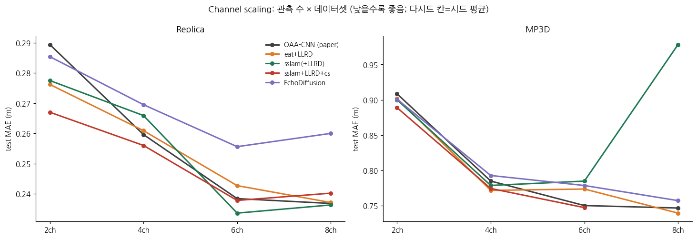
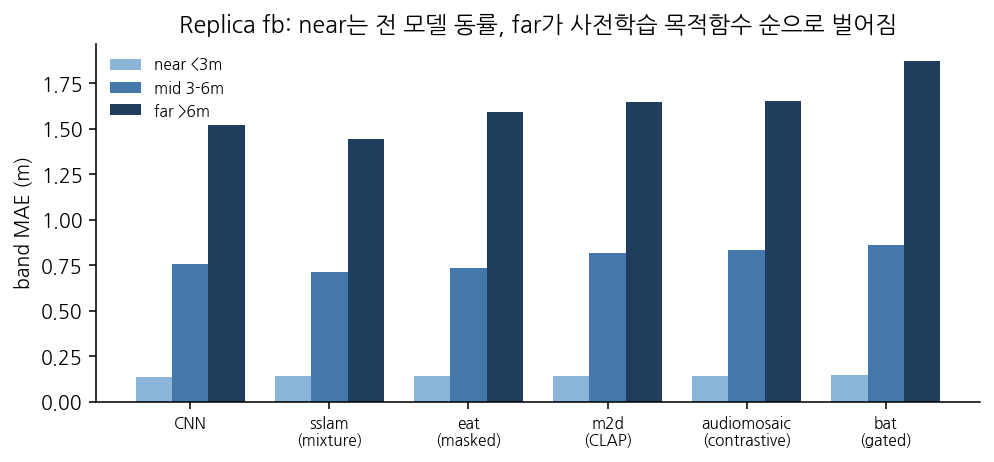
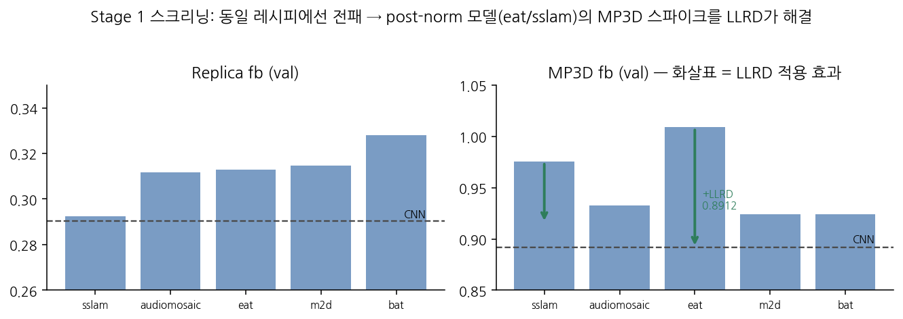
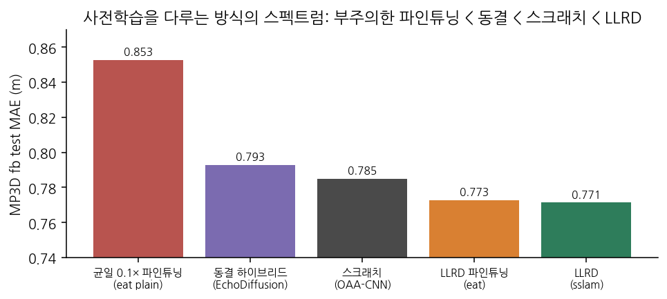
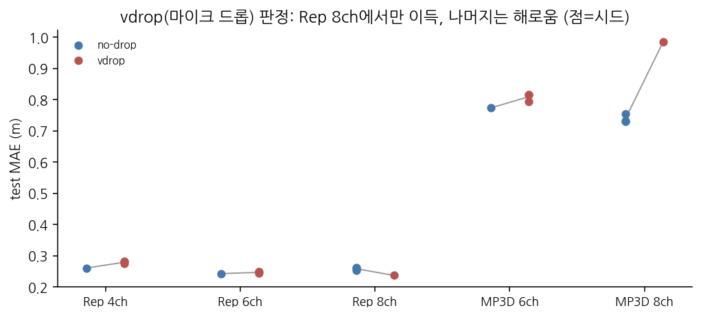
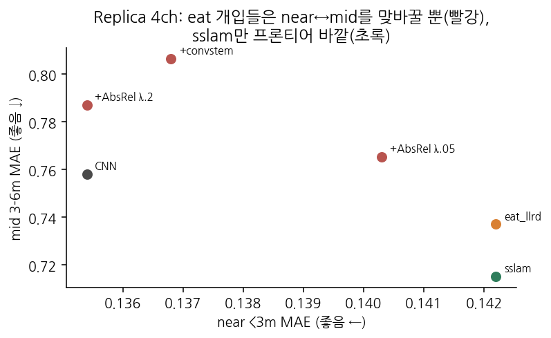
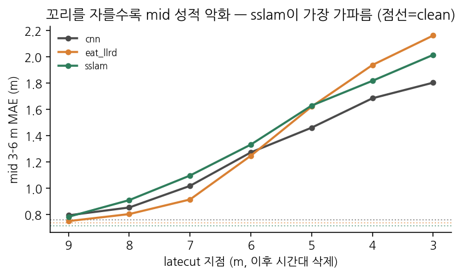
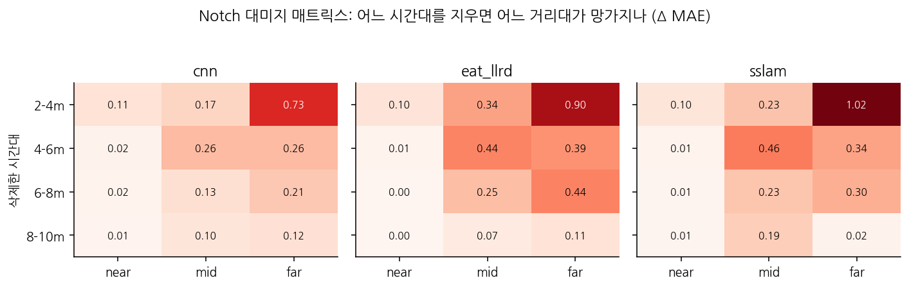
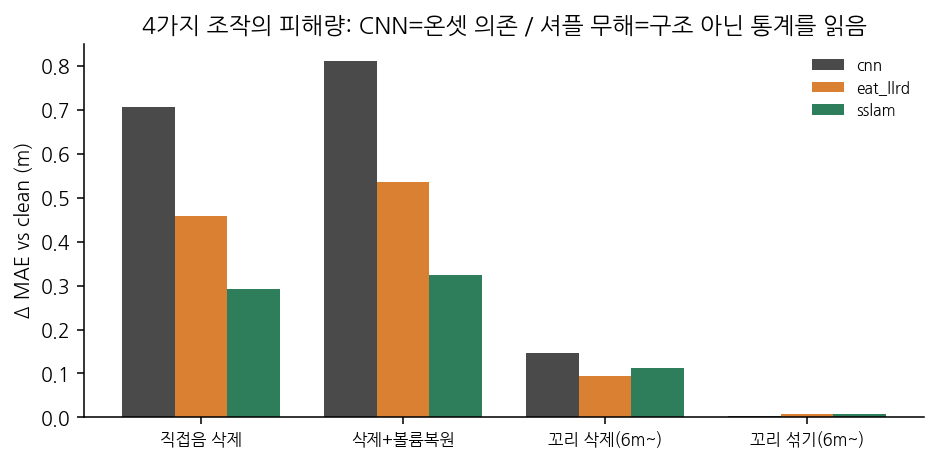
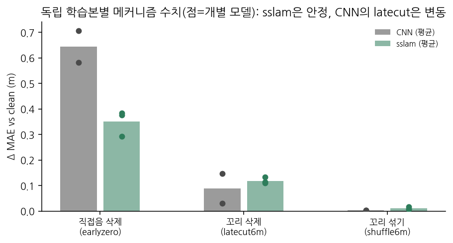

<title>Echo-Depth와 오디오 파운데이션 모델</title>
<link rel="stylesheet" href="https://fonts.googleapis.com/css2?family=Noto+Sans+KR:wght@400;500;700&family=Noto+Serif+KR:wght@400;600&family=IBM+Plex+Mono:wght@400;500&display=swap">
<style>
:root{--bg:#faf9f6;--ink:#22201c;--sub:#6b675f;--line:#e3ded4;--accent:#2e7d5b;--accent2:#b8544f;
      --card:#ffffff;--code:#f1efe9;--win:#e4f2ea;--lose:#f7e8e6}
@media (prefers-color-scheme: dark){:root:not([data-theme="light"]){--bg:#191817;--ink:#e8e5df;--sub:#a29d93;
  --line:#3a3833;--accent:#5fb890;--accent2:#d98a85;--card:#211f1d;--code:#26241f;--win:#1e3529;--lose:#3a2523}}
:root[data-theme="dark"]{--bg:#191817;--ink:#e8e5df;--sub:#a29d93;--line:#3a3833;--accent:#5fb890;
  --accent2:#d98a85;--card:#211f1d;--code:#26241f;--win:#1e3529;--lose:#3a2523}
body{background:var(--bg);color:var(--ink);font-family:'Noto Sans KR',system-ui,sans-serif;
     line-height:1.78;margin:0;padding:0 20px 90px}
main{max-width:820px;margin:0 auto}
h1{font-size:1.8rem;font-weight:700;margin:52px 0 6px;line-height:1.35;text-wrap:balance}
.sub{color:var(--sub);margin:0 0 34px;font-size:.94rem}
h2{font-size:1.28rem;margin:52px 0 14px;padding-top:20px;border-top:1px solid var(--line)}
h3{font-size:1.04rem;margin:30px 0 8px;color:var(--accent)}
p{max-width:72ch;margin:0 0 14px}
b.g{color:var(--accent)} 
.key{background:var(--card);border:1px solid var(--line);border-left:4px solid var(--accent);
     border-radius:6px;padding:16px 20px;margin:20px 0}
figure{margin:24px 0;overflow-x:auto}
figure img{max-width:100%;border:1px solid var(--line);border-radius:6px;background:#fff}
figcaption{color:var(--sub);font-size:.86rem;margin-top:8px;max-width:76ch;line-height:1.6}
.tw{overflow-x:auto}
table{border-collapse:collapse;font-size:.87rem;margin:14px 0;font-variant-numeric:tabular-nums}
th,td{border:1px solid var(--line);padding:5px 10px;text-align:right}
th{background:var(--code);font-weight:500}
td:first-child,th:first-child{text-align:left}
.w{background:var(--win)} .l{background:var(--lose)}
code{font-family:'IBM Plex Mono',monospace;font-size:.86em;background:var(--code);padding:1px 5px;border-radius:4px}
dl{font-size:.93rem;border:1px solid var(--line);border-radius:6px;padding:12px 18px;background:var(--card)}
dt{font-weight:600;color:var(--accent);display:inline}
dd{display:inline;margin:0}
dl div{margin:4px 0}
</style>
<main>
<h1>Generic 오디오 사전학습은 왜 에코 기반 기하 추정으로 전이되는가</h1>
<p class="sub">HEAR-360 인코더 교체 캠페인 보고서 · 2026-08-20 ~ 09-07 · 학습 ~80회, 분석 실험 10종 · <code>hear360/0820_*</code></p>

<h2>1. 서론: 무엇을 주장하고, 무엇을 주장하지 않는가</h2>
<p>이 보고서는 하나의 교체 실험에서 출발한다. 소리의 메아리로 360° 깊이 지도를 복원하는 과제(HEAR-360)에서, 논문의 task-specific CNN 인코더를 범용 오디오 파운데이션 모델(AFM)로 바꾸면 무슨 일이 일어나는가. 상식적인 회의는 두 방향에서 가능하다. 한편으로 AudioSet은 유튜브의 일반 소리로 이루어진 데이터이므로, 그것으로 배운 표현이 "몇 밀리초에 메아리가 도착했는가"라는 기하학적 신호를 도울 이유가 없어 보인다. 다른 한편으로 86M짜리 사전학습 트랜스포머가 15M짜리 스크래치 CNN을 이기는 것은 당연해 보이기도 한다. 이 캠페인의 결과는 두 직관 모두를 기각한다: 아무 AFM이나 붙이면 오히려 CNN보다 나빠지며(§5), 그럼에도 특정한 사전학습 방식을 가진 모델은 올바른 미세조정과 결합될 때 대부분의 평가 조건에서 CNN과 동등하거나 그 이상이 된다(§3).</p>
<p>우리가 주장하는 것은 세 가지다. 첫째, <b>AFM 기반 인코더는 평가된 대부분의 설정에서 CNN 기준선과 동등하거나 우수하며, 이득은 관측이 희소하거나(마이크 2~4개) 데이터가 어려운(실측 스캔 MP3D) 조건에서 가장 뚜렷하다.</b> 둘째, 어느 AFM이 잘 되는지는 임의적이지 않다 — <b>사전학습 formulation과 전이 성능 사이에 강하고 해석 가능한 경향</b>이 있으며, 소리의 중첩을 다루도록 학습된 모델(SSLAM)이 정점에 선다. 셋째, 이 이득의 작동 방식을 test-time 조작 실험으로 추적한 결과, <b>CNN의 판독은 초기·국소 단서에 집중되어 있는 반면 SSLAM은 그에 더해 늦은 잔향 구간에 분산된 정보를 활용한다</b>는 그림이 여러 독립 조작에서 일관되게 지지된다.</p>
<p>동시에 우리가 주장하지 않는 것을 분명히 해 둔다. "사전학습 목적함수가 성능을 결정한다"고 말하지 않는다 — 공개 체크포인트들은 목적함수 외의 세부 레시피도 다르므로, 인과 확정에는 목적함수만 바꾼 통제 사전학습이 필요하다(§7). "SSLAM은 첫 메아리를 쓰지 않는다"고도 말하지 않는다 — 증거가 지지하는 것은 배타가 아니라 추가 활용이다(§6). 그리고 시드 간 분산이 ±0.005~0.012에 이르므로, <b>평균 격차 0.01 미만의 비교는 승패가 아니라 동률로 처리</b>한다는 판정 규칙을 본문 전체에 일관되게 적용한다.</p>

<h2>2. 과제, 모델, 그리고 판정 규칙</h2>
<p>과제를 구체적으로 그려 두는 것이 이후의 모든 논증에 필요하다. 로봇 리그가 처프를 방출하고, 리그에 부착된 마이크 2·4·6·8개가 각각 58ms 동안 반사음을 녹음한다. 소리가 1m를 왕복하는 데 약 5.8ms가 걸리므로 녹음의 시간축은 곧 거리축이다: 3m 벽의 1차 반사는 17ms 부근, 8m 벽은 47ms 부근에 도착한다. 중요한 것은 녹음의 뒷부분이 단일한 성분이 아니라는 점이다 — 거기에는 먼 표면의 1차 반사와, 가까운 표면들 사이를 여러 번 튕겨 늦게 도착한 다중 반사가 겹쳐 있다. 창은 왕복 10m에서 잘리므로, 룸어쿠스틱에서 말하는 수백 ms짜리 확산 잔향은 어떤 모델도 보지 못한다. 이 사실은 §6의 해석에서 중요해진다.</p>
<p>기준 모델(OAA-CNN)은 마이크별 스펙트로그램을 작은 CNN으로 인코딩한 뒤 마이크의 위치·방향을 아는 기하 attention으로 통합한다. 본 캠페인은 이 구조에서 <b>마이크별 인코더 하나만</b> ViT-B/16 AFM으로 교체하고 — 통합부·디코더·손실·학습 레시피는 전부 고정한다. 성능 차이를 인코더 하나에 귀속시키기 위한 설계다. 평가는 전부 test 세트로 하며(val과 test의 순위가 박빙 구간에서 절반꼴로 뒤집히는 것을 반복 관측했기 때문), 격차가 작은 비교는 시드 2~3개의 평균으로 판정한다.</p>
<dl>
<div><dt>r2/fb/r6/r8</dt> — <dd>마이크 2/4/6/8개 구성.</dd></div>
<div><dt>MAE·near·mid·far</dt> — <dd>평균 절대 오차(m)와, 정답 깊이 3m 미만 / 3–6m / 6m 초과 픽셀에서의 대역별 오차.</dd></div>
<div><dt>LLRD</dt> — <dd>층별 학습률 감쇠(0.75). 사전학습 모델의 아래층은 거의 고정(2e-6), 위층만 적응(5e-5).</dd></div>
<div><dt>vdrop</dt> — <dd>학습 중 일부 마이크 입력을 무작위로 0으로 만드는 정규화.</dd></div>
<div><dt>판정 규칙</dt> — <dd>test 기준, 시드 평균 격차 ≥0.01일 때만 승패, 미만은 동률(tie).</dd></div>
</dl>

<h2>3. 결과 I — 개선은 어디서 발생하는가</h2>
<p>여덟 개의 평가 칸(채널 4 × 데이터셋 2)을 놓고 보면, 결과의 구조는 "AFM이 이겼다"는 한 문장보다 훨씬 정보량이 많다. 아래 표와 그림 1이 보여주는 패턴은 이렇다. 관측이 두 개뿐인 r2에서는 두 데이터셋 모두에서 AFM이 명확히 이긴다(Replica −6.3%, MP3D −1.0%). 관측이 넷인 fb에서는 어려운 MP3D에서 시드 3개 전승으로 이기고(0.7717±0.002 vs 0.785), 깨끗한 Replica에서는 시드 3개 평균 0.2659±0.012로 CNN(0.2596)과 동률 범위 안에 있되 방향은 CNN 쪽이다 — 첫 시드의 단독 우위(0.2553)가 시드 행운이었음이 심판 시드로 확정된 사례이며, 박빙 칸을 반드시 다시드로 판정해야 하는 이유를 자체 증명한다. 관측이 여섯인 r6에서 Replica는 SSLAM이 시드 3개 평균 −2.0%로 이기며, 특히 시드 0은 여덟 개 지표 전부(MAE·RMSE·AbsRel·δ1·근·중·원)를 동시에 이긴 캠페인 유일의 사례다. 반면 MP3D r6는 현재까지 CNN이 지키는 유일한 칸이다(eat 기준 +3.1%; sslam 판은 학습 중). 관측이 가장 많은 r8은 Replica에서 정확한 동률(sslam+vdrop 0.2368 = CNN 0.2368; RMSE와 원거리는 sslam이 낫고 근거리는 CNN이 낫다), MP3D에서 시드 3개 평균 −1.0% 승리다. 이로써 Replica 열이 완성되는데, sslam은 네 채널 어디서도 지지 않고 두 채널에서 이긴다.</p>
<figure><figcaption><b>그림 1.</b> 채널 수에 따른 test MAE. 모든 모델이 관측이 늘수록 좋아지지만 기울기가 다르며, 이 기울기의 차이가 §4의 주제다. sslam의 MP3D 6/8ch 점은 학습 중이라 비어 있다.</figcaption></figure>
<div class="tw"><table>
<tr><th>test MAE (m)</th><th>Rep 2ch</th><th>Rep 4ch</th><th>Rep 6ch</th><th>Rep 8ch</th><th>MP3D 2ch</th><th>MP3D 4ch</th><th>MP3D 6ch</th><th>MP3D 8ch</th></tr>
<tr><td>OAA-CNN (논문)</td><td>0.2894</td><td>0.2596</td><td>0.2384</td><td>0.2368</td><td>0.9084</td><td>0.7849</td><td class="w">0.7502</td><td>0.7467</td></tr>
<tr><td>eat+LLRD</td><td class="w">0.2762</td><td>0.2609</td><td>0.2427</td><td>0.2371¹</td><td class="w">0.9018</td><td class="w">0.7717±.002</td><td>0.7736</td><td class="w">0.7395±.011</td></tr>
<tr><td>sslam(+LLRD)</td><td class="w">0.2711</td><td>0.2659±.012² (tie)</td><td class="w">0.2336±.005</td><td>0.2368³ (tie)</td><td class="w">0.8991</td><td class="w">0.7714⁴</td><td>학습중</td><td>학습중</td></tr>
<tr><td>EchoDiffusion</td><td>0.2854</td><td>0.2695</td><td>0.2556</td><td>0.2600</td><td class="w">0.9007</td><td>0.7928</td><td>0.7786</td><td>0.7572</td></tr>
</table></div>
<p style="font-size:.88rem;color:var(--sub)">¹Rep 8ch만 vdrop(§5). ²시드 3개(0.2553/0.2636/0.2789) 평균 0.2659±0.012 vs CNN 0.2596 — 격차 +0.006 < 0.01로 동률(방향은 CNN 우세 쪽); sslam의 fb 시드 분산이 유난히 큼. ³vdrop 판 최종: MAE가 CNN과 소수 4자리까지 동률(0.2368; RMSE·far는 우위, near·mid는 열위). vdrop 없는 판 0.2399. ⁴LLRD 감쇠 0.65, 단일 시드. 초록 = 판정 규칙상 승.</p>
<p>이 패턴은 우연으로 보기 어렵다. 사전학습 표현의 부가가치는 데이터만으로 답이 결정되지 않을 때 발생한다는 일반 원리를 그대로 따르고 있기 때문이다. 마이크 두 개로는 삼각측량이 성립하지 않아 잔향 통계 같은 간접 증거가 답을 좌우하고 — 그래서 r2에서 항상 이긴다. 관측이 여덟 개면 깨끗한 데이터에서는 기하가 데이터만으로 거의 결정되어 사전지식의 여지가 줄고 — 그래서 Replica 고채널은 동률로 수렴한다. 그러나 데이터가 어지러운 MP3D에서는 관측이 많아도 강건한 표현의 값이 남는다 — 그래서 MP3D r8에서도 이긴다. 요컨대 <b>개선은 "얼마나 많은 칸"의 문제가 아니라 "문제가 어려운 곳"의 문제</b>이며, 이것이 우리의 첫 번째 주장이 정확히 의미하는 바다.</p>

<h2>4. 결과 II — 어느 사전학습이 전이되는가, 그리고 왜 그것이 임의적이지 않은가</h2>
<p>다섯 개의 AFM은 모두 같은 아키텍처(ViT-B/16)와 같은 데이터(AudioSet-2M)를 쓰고, 사전학습에서 "무엇을 맞히도록" 훈련됐는가가 다르다. 만약 전이 성능이 이 차이와 무관하게 뒤섞여 있었다면, AFM의 성공은 그저 규모의 문제였을 것이다. 실제 결과는 정반대다. 그림 5가 보여주듯 다섯 모델의 근거리 오차는 0.005 이내로 붙는다 — 스펙트로그램을 16×16 패치로 자르는 공통 구조가 만드는 타이밍 정밀도의 공통 바닥이다. 모델을 가르는 것은 원거리 오차이고, 그 순서는 목적함수의 성격과 정확히 대응한다: 섞인 소리에서 소스를 복원하는 SSLAM(1.446)이 가장 좋고, 가려진 부분을 재구성하는 EAT(1.546), 의미 정렬이 낀 M2D-CLAP(1.651), 변형 불변성을 배우는 AudioMosaic(1.653), 그리고 "분류에 안 중요한 영역"을 게이트로 차단하는 BAT(1.875)가 가장 나쁘다.</p>
<figure><figcaption><b>그림 5.</b> Replica 4ch의 대역별 오차. 왼쪽(근거리)은 다섯 AFM이 사실상 동일하고, 오른쪽(원거리)이 모델을 가른다.</figcaption></figure>
<p>이 순서가 설득력을 갖는 이유는 각 목적함수가 "무엇을 버리도록" 학습하는지를 생각하면 드러난다. 대조학습은 마스킹된 뷰들 사이의 불변성을 극대화하는데, 잔향 꼬리는 정확히 뷰에 따라 달라지는 종류의 디테일이어서 목적함수가 지우는 방향으로 압력을 받는다. 게이트 기반 모델은 분류에 기여하지 않는 확산 성분을 차단하도록 배우는데, 확산 잔향이야말로 이 과제의 깊이 신호다. 반대로 믹스처 SSL은 겹쳐진 소리를 보존하고 분리하도록 배우며, 멀티마이크 에코 입력은 본질적으로 방향과 지연이 다른 반사들의 중첩이다. 즉 <b>far 오차의 순위는 "잔향 구조를 얼마나 보존하도록 배웠는가"의 순위</b>로 읽힌다. 다만 이 논증에는 명시적 한계가 있다: 공개 체크포인트들은 목적함수 외에 마스킹 전략·증강·최적화 세부도 다르므로, 현재 증거가 정당화하는 문장은 "사전학습 formulation이 전이에 상당한 영향을 준다(substantially influences)"까지이고, "결정한다"는 EAT 체크포인트에서 출발해 믹스처 목적함수만 추가한 통제 사전학습으로 확인해야 한다(§7).</p>

<h2>5. 캠페인의 여정 — 결론에 도달하기까지 기각된 가설들</h2>
<p>위의 결과는 한 번에 얻어진 것이 아니라, 실패의 원인을 하나씩 가설로 세워 검증한 결과다. 이 여정 자체가 결론의 신뢰도를 구성하므로 간추려 기록한다.</p>
<p><b>모든 AFM은 처음에 전패했다.</b> 다섯 백본을 동일한 표준 레시피(사전학습부 학습률 0.1배 균일)로 미세조정하자 여덟 칸 어디서도 CNN을 이기지 못했다(그림 6). 특히 MP3D에서 EAT/SSLAM 계열은 학습 중반에 val이 튀며 무너졌는데, 이는 post-norm 구조에서 학습률이 정점일 때 사전학습 특징이 파괴되는 현상이었다. 층별 학습률 감쇠(LLRD)가 이것을 고쳤고 — eat의 MP3D val이 1.009에서 0.891로 내려와 처음으로 CNN을 넘었다 — 이 발견은 캠페인 전체에서 <b>유일하게 부작용 없는 개입</b>으로 남았다. 그림 8은 이 지점을 스펙트럼으로 보여준다: 부주의한 균일 미세조정은 스크래치보다 나쁘고, EchoDiffusion처럼 동결하면 안전하지만 적응이 없으며, LLRD는 "아래층은 사실상 동결, 위층만 적응"이라는 중간 지점으로서 유일하게 기준선을 넘는다.</p>
<figure><figcaption><b>그림 6.</b> 스크리닝(val): 동일 레시피에서 전패. 화살표는 LLRD 적용 효과.</figcaption></figure>
<figure><figcaption><b>그림 8.</b> 사전학습을 다루는 방식의 스펙트럼(MP3D 4ch test).</figcaption></figure>
<p><b>정규화와 구조 개입은 조건부이거나 제로섬이었다.</b> 마이크 드롭(vdrop)은 관측 중복이 충분하고(8ch) 신호가 깨끗한(Replica) 조합에서만 이득이며, 4·6ch에서는 각 시드 3개로 해로움이, MP3D에서는 전 채널에서 해로움이 확인됐다(그림 7) — AFM이 읽는 잔향-통합 입력을 지우는 조작이기 때문이라는 해석과 부합하고, 논문 CNN이 8ch에서만 vdrop을 채택했던 경계와도 일치한다. 근거리 약점을 겨냥한 개입들 — conv 패치 stem, 근거리를 업웨이트하는 AbsRel 손실(강·약 두 용량) — 은 Replica에서 일관되게 근거리를 고치는 만큼 중·원거리를 망치는 자리바꿈에 그쳤다(그림 9). 프론티어 자체를 바깥으로 민 것은 개입이 아니라 백본 교체(SSLAM)뿐이었다는 사실이, "재배분이 아니라 표현이 성능의 한계를 정한다"는 이 캠페인의 중심 교훈이다. 흥미롭게도 같은 conv stem이 거친 MP3D에서는 근·중거리를 동시에 개선하며 4ch 신기록(0.7617)을 세웠다 — 제로섬 법칙조차 데이터셋의 병목(정밀도 제한 vs 강건성 제한)에 종속된 조건부 법칙이었다.</p>
<figure><figcaption><b>그림 7.</b> vdrop 판정(점=시드). Replica 8ch에서만 이득.</figcaption></figure>
<figure><figcaption><b>그림 9.</b> Replica 4ch의 근거리(x)–중거리(y) 평면. eat에 가한 개입들(빨강)은 대각선 위에서 자리만 바꾸고, sslam(초록)만 프론티어 바깥에 있다.</figcaption></figure>
<p><b>비교 모델의 실패도 같은 원리로 설명된다.</b> 디퓨전 기반 EchoDiffusion은 원거리에서 그럴듯한 구조를 채우는 데는 강하지만 8ch에서 6ch보다 오히려 나빠지는 비단조 스케일링을 보인다. 코드 수준에서 원인을 확인했는데, 채널들을 마이크 위치 정보 없이 평균·스택으로만 합치기 때문에 어느 방향의 관측인지 모델이 알 수 없어 6ch에서 정보가 포화된다. 같은 마이크 드롭이 위치-인지 구조(OAA)에는 이득, 위치-맹목 구조(eco)에는 손해였다는 대비가 이 진단의 증거다.</p>

<h2>6. 결과 III — 메커니즘: 관찰과 가설을 분리한 논증</h2>
<p>성능 표만으로는 "왜"에 답할 수 없다. 우리는 학습을 추가하지 않고, 이미 학습된 세 모델(CNN, eat, sslam)에 조작된 test 입력을 주어 성적 하락을 측정하는 방식으로 메커니즘을 추적했다. 데이터의 파형이 렌더링된 임펄스 응답이고 직접음 — 스피커에서 벽을 거치지 않고 귀로 오는, 방 정보가 전혀 없는 성분 — 이 모든 장면에서 정확히 49번째 샘플에 폭 1.5ms로 고정되어 있음을 먼저 확인했기에, 시간 기준의 절단이 유효하다. 아래에서 각 실험이 <b>직접 보여주는 것</b>과 <b>그로부터 세운 가설</b>을 구분해 서술한다.</p>
<p><b>초기 구간을 지우면 CNN이 가장 크게 무너진다.</b> 직접음을 포함한 왕복 1m 구간을 지우자(장면 정보는 거의 지워지지 않는 조작이다) CNN은 +0.706, sslam은 +0.293 악화됐다 — 상대 하락률로도 272% 대 115%다. 이것이 직접 보여주는 것은 CNN의 판독이 초기 음향 정보에 훨씬 민감하다는 사실이다. 다만 지워진 것에는 도착시각의 앵커, 초기 에너지, 국소 스펙트럼이 함께 들어 있으므로, "그중 무엇인가"는 이 실험만으로 구분되지 않는다 — 직접음의 위치만 옮기는 조작과 크기만 바꾸는 조작을 분리한 후속 실험(G)이 이를 판정한다. "큰 신호가 빠져 입력 통계가 뒤틀린 탓"이라는 대안 가설은 통제 실험으로 기각했다: 지운 뒤 전체 에너지를 복원해도 세 모델 모두 회복되지 않고 오히려 악화됐다. 물론 이 통제가 배제하는 것은 전역 에너지 설명까지이며, 국소 포락선·스펙트럼 분포의 변화까지 배제하지는 않는다.</p>
<p><b>SSLAM의 추가 정확도는 늦은 구간에 의존하며, 그 의존은 분산되어 있다.</b> 꼬리를 자르는 위치를 9m에서 3m까지 옮겨가며 측정하면(그림 2), 3–6m 표면들의 1차 도착 창을 전혀 건드리지 않는 마지막 8–10m 구간의 삭제만으로 sslam의 중거리 우위(−0.043)가 사라지고, 절단을 앞으로 당길수록 절벽 없이 매끄럽게 악화된다. 강조하건대 이것은 sslam이 1차 메아리를 쓰지 않는다는 뜻이 아니다 — 1차 정보에 <b>더해</b> 활용하는 늦은 잔향 관측이 우위분의 출처라는 뜻이며, 절벽의 부재는 그 출처가 특정 시점이 아니라 꼬리 전체에 얇게 분산되어 있음을 보인다. 하나의 단서에 집중된 표현(CNN의 온셋)은 그 단서가 사라질 때 급락하고, 분산된 표현은 어느 조각을 빼앗아도 완만하게만 나빠진다 — 두 실험의 붕괴 곡선 모양 자체가 표현의 구조를 드러내는 셈이다.</p>
<figure><figcaption><b>그림 2.</b> 꼬리 절단 위치 스윕. 점선은 무절단 성적.</figcaption></figure>
<p><b>구간별 구멍내기는 이 그림을 셀 단위로 보여준다.</b> 2m 폭의 시간대를 하나씩 지우고 어느 거리대가 망가지는지 측정한 대미지 매트릭스(그림 3)에서, CNN은 대각 성향 — 원거리 성적은 원거리 슬롯을 지울 때(+0.123) 떨어진다 — 을 보이는 반면, sslam은 원거리 슬롯을 지워도 원거리 오차가 +0.019밖에 늘지 않는다. 먼 표면의 1차 반사 없이도 원거리 예측이 거의 유지된다는 이 관찰은 강력하지만, 해석에는 대안이 남는다: 남은 음향 증거로부터의 재구성일 수도, "이런 근거리 구조의 방이면 먼 벽은 대개 이 정도"라는 학습 데이터의 방 모양 prior일 수도 있다. 두 해석은 근·중거리 기하는 같고 먼 벽만 다른 반사실 샘플에서 예측이 실제 벽을 따라가는지로만 구분되며, 이는 §7의 미해결 항목이다.</p>
<figure><figcaption><b>그림 3.</b> 대미지 매트릭스: 행=지운 시간대, 열=하락한 거리대, 숫자=ΔMAE.</figcaption></figure>
<p><b>꼬리의 "무엇"을 읽는가에 대한 첫 답은 셔플 실험이 준다.</b> 6m 이후를 지우는 대신 0.2m 블록 단위로 순서만 뒤섞자 — 에너지는 보존된다 — 세 모델 모두 사실상 무손상이었다(Δ+0.003~0.008; 삭제 시 +0.09~0.15). 직접 보여주는 것은 0.2m 스케일의 전역 배열이 중요하지 않다는 사실이고, 노치에서 6–8m을 지우나 8–10m을 지우나 피해가 삭제된 에너지 양에 비례했다는 관찰과 합치면, 모델들이 꼬리에서 얻는 것은 정밀한 도착 시각의 목록이 아니라 잔향의 분산된 특성이라는 해석이 자연스럽다. 다만 블록 내부의 국소 무늬는 보존되었으므로 "전역 통계만 읽는다"와 "국소 조각들을 순서 무관하게 모아 쓴다"는 아직 갈리지 않았다 — 블록 크기를 0.02m까지 줄여가는 스윕(H)이 sslam이 요구하는 시간 해상도를 직접 측정한다.</p>
<figure><figcaption><b>그림 4.</b> 네 조작의 피해량 비교. 온셋 삭제는 CNN에 파멸적, 에너지 복원은 무효, 꼬리 셔플은 전원 무해.</figcaption></figure>
<p><b>이 비대칭은 학습의 우연이 아니다.</b> 독립적으로 다시 학습된 모델들(CNN 동일구조 재학습판, sslam 시드 1, sslam LLRD판)에서 같은 방향의 비대칭이 전부 재현됐다 — 온셋 삭제 시 CNN이 1.55배 더 붕괴, 꼬리 의존은 AFM이 4~7배. 정직하게 덧붙이면, 개별 교란 효과의 크기는 시드에 따라 상당히 변동한다(8–10m 의존도 0.195→0.040). 따라서 정성적 비대칭은 모델 계열의 특성으로 신뢰할 수 있으나, 특정 수치를 메커니즘의 고정 상수처럼 인용해서는 안 되며, 메커니즘 그림은 시드 평균±표준편차로 제시되어야 한다(보강 실험 진행 중).</p>
<div class="key"><b>종합하면</b>, 증거가 가장 자연스럽게 지지하는 그림은 배타적 이분법이 아니다. CNN과 SSLAM 모두 초기 메아리를 사용한다. 그러나 CNN의 표현은 초기·국소 단서에 집중되어 있어 그 단서의 교란에 급격히 취약하고, SSLAM은 같은 정보에 더해 늦은 잔향 필드에 분산된 증거를 활용할 수 있어 어떤 단일 단서가 사라져도 하락이 완만하다. 이 능력이 하필 소리의 중첩을 다루도록 사전학습된 모델에서 나타난다는 사실은, generic 오디오 사전학습이 에코 기하로 전이되는 이유에 대한 일관된 설명을 제공한다.</div>

<h3>인과 간극을 닫는 대조 실험 네 건의 결과</h3>
<p>§6 말미에 예고했던 네 실험이 완료되었고, 결과는 본문의 해석을 대체로 강화하되 두 지점에서 수정한다.</p>
<p><b>G — 직접음의 시각과 크기를 분리하면, 모델을 가르는 것은 진폭 쪽이다.</b> 직접음의 위치를 0.2m만큼 옮기되 크기를 보존하면 세 모델 모두 크게 무너진다(Δ +0.59~+0.74; CNN/sslam 비 1.26). 반면 위치를 보존한 채 크기를 4분의 1로 줄이면 CNN이 +0.463, sslam이 +0.175로 <b>2.7배의 비대칭</b>이 나타난다. 즉 직접음을 시간 기준점으로 삼는 것은 세 모델의 공통 전략이고, CNN을 특별히 취약하게 만드는 것은 "메아리가 직접음 대비 얼마나 작은가"라는 <b>진폭 보정에의 의존</b>이다. 실험 A에서 분리하지 못했던 두 요소가 이렇게 갈라진다: CNN의 판독은 타이밍과 진폭 단서를 모두 쓰되, 모델 간 차이의 주성분은 진폭 쪽이다.</p>
<p><b>H — 셔플 블록을 0.02m까지 줄여도 무해하다.</b> 블록 크기를 1m에서 0.02m까지 다섯 단계로 줄이며 꼬리를 뒤섞어도 모든 모델의 Δ가 +0.009 이하에 머문다. 앞서 열어 두었던 "국소 조각들을 순서 무관하게 모아 쓴다"는 bag-of-patches 해석까지 이것으로 기각된다 — sslam이 꼬리에서 요구하는 시간 해상도는 사실상 없으며, 활용되는 것은 STFT 창 수준에서 살아남는 광대역 에너지·스펙트럼 포락, 즉 집계 통계다. 이는 셔플 결과와 노치의 에너지-비례 피해를 관통하는 가장 단순한 설명이다.</p>
<p><b>I — 1차 창과 꼬리의 상호작용은 sslam에서만 저가산적이다.</b> 3–6m 창과 8–10m 꼬리를 각각 지웠을 때의 mid 피해 합(0.994)이 동시에 지웠을 때의 피해(0.943)보다 크다 — sslam의 두 정보원은 부분적으로 중복이어서 하나가 사라지면 다른 쪽이 일부를 대체한다. 같은 계산이 CNN과 eat에서는 초가산적으로 나온다(각각 0.167→0.224, 0.819→1.093). 분산·중복 인코딩이라는 표현 구조의 주장에 대해, 이는 붕괴 곡선의 모양을 넘어서는 정량적 상호작용 증거다.</p>
<p><b>F+ — 시드 복제는 비대칭의 방향을 보존하되 한 주장을 철회하게 한다.</b> 독립 학습본들에서 sslam의 꼬리 의존은 놀랄 만큼 안정적이고(latecut6 Δ = 0.113/0.109/0.133), 셔플 무해성도 전원 재현된다(≤0.016). 그러나 CNN의 latecut 피해는 체크포인트에 따라 0.146에서 0.030까지 다섯 배를 오간다 — 재학습판(vw)의 레시피에 뷰 가중이 포함되어 순수한 시드 복제가 아니라는 한계까지 감안하면, "CNN도 꼬리에 크게 의존한다"는 비교 문장은 근거가 불안정하므로 철회한다. CNN에 관한 강한 주장은 시드 간 재현된 조작들 — 온셋 삭제(1.55~2.4배)와 진폭 축소(2.7배) — 위에만 세운다.</p>
<figure><figcaption><b>그림 10.</b> 독립 학습본별 조작 피해량(점 = 개별 모델, 막대 = 평균). sslam의 수치는 조작 전반에서 안정적이고, CNN의 latecut 피해만 체크포인트에 따라 크게 변동한다.</figcaption></figure>
<h2>7. 타당성 위협과 이를 닫기 위한 실험</h2>
<p>우리의 결론이 공격받을 수 있는 지점을 정리해 두는 것이 이 보고서의 마지막 역할이다. 첫째, 모든 하드 마스킹 조작은 학습 분포 밖의 입력을 만들므로, 측정된 하락에는 "단서의 상실"과 "낯선 입력에 대한 일반적 취약성"이 섞여 있다. 모델 간 차이는 유효하지만 절대 크기는 보수적으로 읽어야 하며, 물리적으로 그럴듯한 감쇠 마스킹이나 유사 마스킹을 증강으로 경험한 모델에서의 재검이 이 교란을 줄일 수 있다. 둘째, 목적함수 논증(§4)은 레시피 교란을 안고 있으며, EAT에서 출발해 믹스처 목적함수만 추가한 통제 사전학습 대 동일 기간 EAT 목적함수만 계속한 대조군의 비교가 인과 확정의 경로다. 셋째, 원거리 재구성(§6)의 dataset-prior 대안은 반사실 기하 테스트로만 배제된다. 넷째, 시드 보강 — 주요 설정 시드 3개 통일과 신뢰구간 병기 — 은 진행 중이다. 다섯째, 현재의 메커니즘 추론은 출력 하락을 통한 간접 추론이며, 인코더 중간 표현에 대한 선형 프로브(구간별 에너지·RT류 통계·실제 깊이의 복호 가능성 비교)가 "SSLAM 표현에 잔향 통계가 더 잘 담겨 있다"를 직접 보일 수 있는 다음 단계다.</p>
<p>네 개의 우선 실험(G·H·I·F+)은 완료되어 §6에 반영되었다. 남은 항목은 통제 사전학습(목적함수 인과), 반사실 기하 테스트(dataset prior), 중간 표현 프로브, 그리고 물리적으로 그럴듯한 마스킹 재검이다.</p>

<h2>8. 결론 및 실무 권고</h2>
<div class="key"><b>권고는 명확하다: 이 과제에서 파운데이션 모델을 쓰는 것이 옳다.</b> sslam(+LLRD) 인코더는 평가된 여덟 조건 중 어디에서도 CNN에 의미 있게 뒤지지 않으면서(유일한 열세 칸도 판정 미완), 관측이 희소하거나 데이터가 어려운 조건 — 실전 배치에서 정작 중요한 조건들 — 에서는 명확히 우수하다. 단서는 두 가지뿐이다: 백본은 아무 것이나 되지 않고(스크리닝에서 다섯 모델 전패를 상기하라) 소리의 중첩을 다루도록 사전학습된 계열이어야 하며, 미세조정은 반드시 LLRD로 해야 한다(균일 학습률은 사전학습을 파괴해 스크래치보다 나빠진다). 본 보고서의 신중한 어조는 "쓸지 말지"가 아니라 "왜 되는지"에 대한 주장들의 강도를 조절하는 것이다.</div>
<p>이 캠페인이 더하는 것은 "파운데이션 모델을 붙였더니 좋아졌다"는 보고가 아니다. 우리는 (i) 개선이 발생하는 조건 — 관측 희소성과 데이터 난이도 — 을 특정했고, (ii) 백본 간 차이가 사전학습 formulation의 성격과 체계적으로 대응함을 보였으며, (iii) test-time 조작의 연쇄를 통해 그 대응의 그럴듯한 작동 방식 — 초기 집중형 표현 대 분산형 표현 — 을 관찰과 가설을 구분해 가며 추적했다. 남은 인과 간극들은 명시되어 있고, 각각을 닫는 실험이 정의되어 있다. generic 오디오 사전학습이 물리 신호의 역문제로 전이되는 이유를 묻는 이 질문은, 대답이 완결되는 만큼 사전학습 설계(공간 믹스처 DAPT)와 입력 설계(위상/ITD), 그리고 대역 전문가 결합으로 되먹임될 것이다.</p>
<p class="sub">재현: <code>python 0820_reverb_ablation.py {v1|sweep|notch|renorm|seeds|shuffle|timing_amp|blocksweep|cross2x2|seedmech}</code> · 원자료 <code>0820_report/data/</code> · 그림 <code>0820_report/figs/</code> · 전체 수치 <code>0820_RESULTS.md</code></p>
</main>
